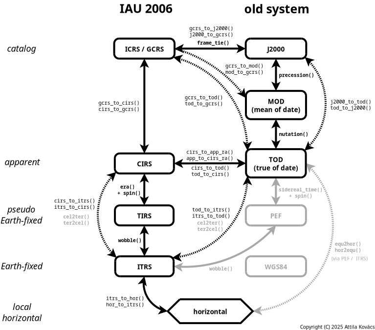
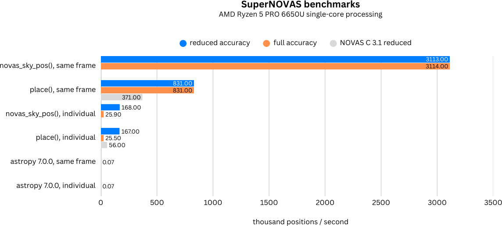

|
SuperNOVAS v1.5
The NOVAS C library, made better
|
|
SuperNOVAS v1.5
The NOVAS C library, made better
|
The NOVAS C astrometry library, made better.
SuperNOVAS is a C/C++ astronomy software library, providing high-precision astrometry such as one might need for running an observatory, a precise planetarium program, or for analyzing astronomical datasets. It started as a fork of the Naval Observatory Vector Astrometry Software (NOVAS) C version 3.1, but since then it has grown into its own, providing bug fixes, tons of new features, and a much improved API compared to the original NOVAS.
SuperNOVAS is easy to use and it is very fast, providing 3–5 orders of magnitude faster position calculations than astropy 7.0.0 in a single thread (see the benchmarks), and its performance will scale with the number of CPUs when calculations are performed in parallel threads.
SuperNOVAS is entirely free to use without licensing restrictions. Its source code is compatible with the C99 standard, and hence should be suitable for old and new platforms alike. And, despite it being a light-weight library, it fully supports the IAU 2000/2006 standards for microarcsecond-level position calculations.
This document has been updated for the v1.5 and later releases.
SuperNOVAS is a fork of the The Naval Observatory Vector Astrometry Software (NOVAS). (It is not related to the separate NOVA / libnova library.)
The primary goal of SuperNOVAS is to improve on the original NOVAS C library via:
At the same time, SuperNOVAS aims to be fully backward compatible with the intended functionality of the upstream NOVAS C library, such that it can be used as a build-time replacement for NOVAS in your application without having to change existing (functional) code you may have written for NOVAS C.
SuperNOVAS is really quite easy to use. Its new API is just as simple and intuitive as that of astropy (or so we strive for it to be), and it is similarly well documented also (see the API documentation). You can typically achieve the same results with similar lines of code with SuperNOVAS as with astropy, notwithstanding a little more involved error handling at every step (due to the lack of try / except style constructs in C).
SuperNOVAS is currently based on NOVAS C version 3.1. We plan to rebase SuperNOVAS to the latest upstream release of the NOVAS C library, if new releases become available.
SuperNOVAS is maintained by Attila Kovács at the Center for Astrophysics | Harvard & Smithsonian, and it is available through the Smithsonian/SuperNOVAS repository on GitHub.
Outside contributions are very welcome. See how you can contribute on how you can make SuperNOVAS even better.
SuperNOVAS fixes a number of outstanding issues with NOVAS C 3.1:
sidereal_time() function had an incorrect unit cast. This was a documented issue of NOVAS C 3.1.ephem_close() in eph_manager.c did not reset the EPHFILE pointer to NULL. This was a documented issue of NOVAS C 3.1.ephemeris(). When getting positions and velocities for Solar-system sources, it is important to use the values from the time light originated from the observed body rather than at the time that light arrives to the observer. This correction was done properly for positions, but not for velocities or distances, resulting in incorrect observed radial velocities or apparent distances being reported for spectroscopic observations or for angular-physical size conversions.ira_equinox() which may return the result for the wrong type of equinox (mean vs. true) if the equinox argument was changing from 1 to 0, and back to 1 again with the date being held the same. This affected routines downstream also, such as sidereal_time().cio_basis(), cio_location(), ecl2equ(), equ2ecl_vec(), ecl2equ_vec(), geo_posvel(), place(), and sidereal_time(). All these functions returned a cached value for the other accuracy if the other input parameters are the same as a prior call, except the accuracy.cio_basis() with alternating CIO location reference systems. This affected many CIRS-based position calculations downstream.equ2ecl_vec() and ecl2equ_vec() whereby a query with coord_sys = 2 (GCRS) has overwritten the cached mean obliquity value for coord_sys = 0 (mean equinox of date). As a result, a subsequent call with coord_sys = 0 and the same date as before would return the results in GCRS coordinates instead of the requested mean equinox of date coordinates.fmod() unchecked, which resulted in angles outside of the expected [0:2π] range and was also the reason why cal_date() did not work for negative JD values.aberration() returning NaN vectors if the ve argument is 0. It now returns the unmodified input vector appropriately instead.az output value in equ2hor() at zenith. While any azimuth is acceptable really, it results in unpredictable behavior. Hence, we set az to 0.0 for zenith to be consistent.d_light() if the first position argument is the ephemeris reference position (e.g. the Sun for solsys3.c). The bug affects for example grav_def(), where it effectively results in the gravitational deflection due to the Sun being skipped.rad_vel() has a number of issues that produce inaccurate results. The errors are typically at or below the tens of m/s level for objects not moving at relativistic speeds.cel2ter() / ter2cel() was such that if both xp and yp parameters were zero, then no wobble correction was applied, not even for the TIO longitude (s'). The error from this omission is very small, at just a few μas (microarcseconds) within a couple of centuries of J2000.SuperNOVAS strives to maintain API compatibility with the upstream NOVAS C 3.1 library, but not binary (ABI) compatibility.
If you have code that was written for NOVAS C 3.1, it should work with SuperNOVAS as is, without modifications. Simply (re)build your application against SuperNOVAS, and you are good to go.
The lack of binary compatibility just means that you cannot drop-in replace the libraries (e.g. the static libnovas.a, or the shared libnovas.so), from NOVAS C 3.1 with those from SuperNOVAS. Instead, you will have to build (compile) your application referencing the SuperNOVAS headers and/or libraries from the start.
This is because some function signatures have changed, e.g. to use an enum argument instead of the nondescript short int option arguments used in NOVAS C 3.1, or because we added a return value to a function that was declared void in NOVAS C 3.1. We also changed the object structure to contain a long ID number instead of short to accommodate JPL NAIF codes, for which 16-bit storage is insufficient.
The SuperNOVAS distribution contains a GNU Makefile, which is suitable for compiling the library (as well as local documentation, and tests, etc.) on POSIX systems such as Linux, BSD, Cygwin or WSL – using GNU make.
Before compiling the library take a look a config.mk and edit it as necessary for your needs, or else define the necessary variables in the shell prior to invoking make. For example:
ldconfig can locate the libcalceph shared library. You can also control CALCEPH integration manually, e.g. by setting CALCEPH_SUPPORT = 1 in config.mk or in the shell prior to the build. CALCEPH integration will require an accessible installation of the CALCEPH development files (C headers and unversioned static or shared libraries depending on the needs of the build).ldconfig can locate the libcspice shared library. You can also control CSPICE integration manually, e.g. by setting CSPICE_SUPPORT = 1 in config.mk or in the shell prior to the build. CSPICE integration will require an accessible installation of the CSPICE development files (C headers, under a cspice/ subfolder in the header search path, and unversioned static or shared libraries depending on the needs of the build). You might want to check out the Smithsonian/cspice-sharedlib repository for building CSPICE as a shared library.-DTHREAD_LOCAL=... added to CFLAGS. (Don't forget to enclose the string value in escaped quotes in config.mk, or unescaped if defining the THREAD_LOCAL shell variable prior to invoking make.)Additionally, you may set number of environment variables to futher customize the build, such as:
CC: The C compiler to use (default: gcc).CPPFLAGS: C preprocessor flags, such as externally defined compiler constants.CFLAGS: Flags to pass onto the C compiler (default: -g -Os -Wall). Note, -Iinclude will be added automatically.LDFLAGS: Extra linker flags (default is not set). Note, -lm will be added automatically.CSTANDARD: Optionally, specify the C standard to compile for, e.g. c99 to compile for the C99 standard. If defined then -std=$(CSTANDARD) is added to CFLAGS automatically.WEXTRA: If set to 1, -Wextra is added to CFLAGS automatically.FORTIFY: If set it will set the _FORTIFY_SOURCE macro to the specified value (gcc supports values 1 through 3). It affords varying levels of extra compile time / runtime checks.CHECKEXTRA: Extra options to pass to cppcheck for the make check targetDOXYGEN: Specify the doxygen executable to use for generating documentation. If not set (default), make will use doxygen in your PATH (if any). You can also set it to none to disable document generation and the checking for a usable doxygen version entirely.Now you are ready to build the library:
will compile the shared (e.g. lib/libsupernovas.so) libraries, and compile the API documentation (into doc/) using doxygen (if available). Alternatively, you can build select components of the above with the make targets shared, and local-dox respectively. And, if unsure, you can always call make help to see what build targets are available.
To build SuperNOVAS as static libraries, use make static.
After building the library you can install the above components to the desired locations on your system. For a system-wide install you may simply run:
Or, to install in some other locations, you may set a prefix and/or DESTDIR. For example, to install under /opt instead, you can:
Or, to stage the installation (to /usr) under a 'build root':
gmake instead of make.As of v1.5, SuperNOVAS can be built using CMake (many thanks to Kiran Shila). CMake allows for greater portability than the regular GNU Makefile. Note, however, that the CMake configuration does not support all of the build options of the GNU Makefile, such as automatic CALCEPH and CSPICE integration on Linux, supporting legacy NOVAS C style builds, and code coverage tracking.
The basic build recipe for CMake is:
The SuperNOVAS CMake build supports the following options (in addition to the standard CMake options):
BUILD_SHARED_LIBS=ON|OFF (default: OFF) - Build shared libraries instead of staticBUILD_DOC=ON|OFF (default: ON) - Compile HTML documentation. Requires doxygen.BUILD_EXAMPLES=ON|OFF (default: ON) - Build the included examplesBUILD_TESTING=ON|OFF (default: ON - Build regression testsBUILD_BENCHMARK=ON|OFF (default: OFF - Build benchmarking programsENABLE_CALCEPH=ON|OFF (default: OFF) - Enable CALCEPH ephemeris plugin support. Requires CALCEPH package.ENABLE_CSPICE=ON|OFF (default: OFF) - Enable CSPICE ephemeris plugin support. Requires cspice library installed.ENABLE_SOLSYS1=ON|OFF (default: OFF) - Enable legacy DE200 – DE421 ephemeris plugin support via eph_manager() (i.e., solsys1.c).ENABLE_SOLSYS2=ON|OFF (default: OFF) - Enable ephemeris plugin support via the PLEPH Fortran library and a user-provided jplint.f implementation (i.e., solsys2.c).For example, to build SuperNOVAS as shared libraries with CALCEPH integration for ephemeris support:
If a CMAKE_BUILD_TYPE is not set, the build will only use the CFLAGS (if any) that were set in the environment. This is ideal for those who want to have full control of the compiler flags used in the build. Specifying Release or Debug will append a particular set of appropriate compiler options which are suited for the given build type.
After a successful build, you can install the Runtime (libraries), and Development (headers, CMake config, and pkg-config) components, e.g. under /usr/local, as:
You can also use the --component option to install just the selected components. For example to install just the Runtime component:
There are a number of ways you can build your application with SuperNOVAS. See which of the options suits your needs best:
MakefileProvided you have installed the SuperNOVAS headers and (static or shared) libraries into a standard location, you can build your application against it easily. For example, to build myastroapp.c against SuperNOVAS, you might have a Makefile with contents like:
If you have a legacy NOVAS C 3.1 application, it is possible that the compilation will give you errors due to missing includes for stdio.h, stdlib.h, ctype.h or string.h, because these headers were implicitly included with novas.h in NOVAS C 3.1, but not in SuperNOVAS (at least not by default), as a matter of best practice. If this is a problem for you can 'fix' it in one of two ways: (1) Add the missing #include directives to your application source explicitly, or if that's not an option for you, then (2) set the -DCOMPAT=1 compiler flag when compiling your application:
If your application uses optional planet or ephemeris calculator modules, you may need to specify the additional shared libraries also:
Add the appropriate bits from below to the CMakeLists.txt file of your application:
solarsystem() and readeph() modulesThe NOVAS C way to handle planet or other ephemeris functions was to link particular modules to provide the solarsystem() / solarsystem_hp() and readeph() functions. This approach is discouraged in SuperNOVAS, since it will prevent you from selecting other implementations at runtime. The old, deprecated way, of incorporating Solar-system data is supported, nevertheless, for legacy applications.
To use your own existing default solarsystem() implementation in this way, you must build the library with DEFAULT_SOLSYS unset (or else set to 0) in config.mk, and your applications Makefile may contain something like:
The same principle applies to using your specific readeph() implementation (only with DEFAULT_READEPH being unset in config.mk).
A better way to recycle your old planet and ephemeris calculator modules may be to rename solarsystem() / solarsystem_hp() functions therein to e.g. my_planet_calculator() / my_planet_calculator_hp() and then in your application can specify these functions as the provider at runtime.
E.g.:
For readeph() implementations, it is recommended that you change both the name and the footprint to e.g.:
and then then apply it in your application as:
While it requires some minimal changes to your old code, the advantage of this preferred approach is (a) that you do not need to re-build the library with the DEFAULT_SOLSYS and DEFAULT_READEPH options disabled, and (b) you, and other users of the library, can switch between different planet and ephemeris calculator functions at will, during runtime.
 |
|---|
| Figure 1. SuperNOVAS Coordinate Systems and Conversions. Functions indicated in bold face are available in NOVAS C also. All other functions are available in SuperNOVAS only. SuperNOVAS also adds efficient matrix transformations between the equatorial systems. |
The IAU 2000 and 2006 resolutions have completely overhauled the system of astronomical coordinate transformations to enable higher precision astrometry. (Super)NOVAS supports coordinate calculations both in the old (pre IAU 2000) ways, and in the new IAU standard method. The table below provides an overview of how the old and new methods define some of the terms differently:
| Concept | Old standard | New IAU standard |
|---|---|---|
| Catalog coordinate system | MOD (e.g. FK4, FK5, HIP...) | International Celestial Reference System (ICRS) |
| Dynamical system | True of Date (TOD) | Celestial Intermediate Reference System (CIRS) |
| Dynamical R.A. origin | equinox of date | Celestial Intermediate Origin (CIO) |
| Precession, nutation, bias | no tidal terms | IAU 2000/2006 precession/nutation model |
| Celestial Pole offsets | dψ, dε (for TOD) | xp, yp (for ITRS) |
| Earth rotation measure | Greenwich Sidereal Time (GST) | Earth Rotation Angle (ERA) |
| Pseudo Earth-fixed system | PEF | Terrestrial Intermediate Reference System (TIRS) |
| Earth rotation origin | Greenwich Meridian | Terrestrial Intermediate Origin (TIO) |
| Earth-fixed System | WGS84 | International Terrestrial Reference System (ITRS) |
See the various enums and constants defined in novas.h, as well as the descriptions on the various NOVAS routines on how they are appropriate for the old and new methodologies respectively. Figure 1 also shows the relation of the various old and new coordinate systems and the (Super)NOVAS functions for converting position / velocity vectors among them.
observer location. Aberration and gravitational deflection correction included for apparent places only (as seen from the observer location, regardless of where that is), but not for geometric places.cel_pole()) is discouraged. Instead, the sub-arcsecond level corrections to Earth orientation (xp, yp) should be used only for converting between the pseudo Earth-fixed (PEF or TIRS) and ITRS, and vice-versa (e.g. with novas_make_frame() or wobble()).SuperNOVAS v1.1 has introduced a new, more intuitive, more elegant, and more efficient approach for calculating astrometric positions of celestial objects. The guide below is geared towards this new method. However, the original NOVAS C approach remains viable also (albeit often less efficient).
NOVAS-legacy.md.A sidereal source may be anything beyond the Solar system with 'fixed' catalog coordinates. It may be a star, or a galactic molecular cloud, or a distant quasar.
First, you must provide the astrometric parameters (coordinates, and optionally radial velocity or redshift, proper motion, and/or parallax or distance also). Let's assume we pick a star for which we have B1950 (i.e. FK4) coordinates. We begin with the assigned name and the R.A. / Dec coordinates.
If you have coordinates as strings in decimal or HMS / DMS format, you might use novas_str_hours() and/or novas_str_degrees() to convert them to hours/degrees for novas_init_cat_entry(), with a fair bit of flexibility on the particulars of the representation, e.g.:
Next, if it's a star or some other source within our own Galaxy, you'll want to specify its proper motion (in the same reference system as the above coordinates), so we can calculate its position for the epoch of observation.
For Galactic sources you will also want to set the parallax using novas_set_parallax() or equivalently the distance (in parsecs) using novas_set_distance(), e.g.:
Finally, for spectroscopic applications you will also want to set the radial velocity. You can use novas_set_ssb_vel() if you have standard radial velocities defined with respect to the Solar System Barycenter; or novas_set_lsr_vel() if the velocity is relative to the Local Standard of Rest (LSR); or else novas_set_redshift() if you have a redshift measure (as is typical for distant galaxies and quasars). E.g.:
Alternatively, if you prefer, you may use the original NOVAS C make_cat_entry() to set the astrometric parameters above all at once.
E.g.:
Next, we wrap that catalog source into a generic celestial object structure. (An object handles various Solar-system sources also, as you'll see further below). Whereas the catalog source may have been defined in any epoch / catalog system, the object structure shall define ICRS coordinates always (no exceptions):
Alternatively, for high-_z_ sources you might simply use the 1-step make_redshifted_object_sys() e.g.:
Next, we define the location where we observe from. Here we can (but don't have to) specify local weather parameters (temperature and pressure) also for refraction correction later (in this example, we'll skip the weather):
novas_geodetic_to_cartesian() to convert locations to xyz coordinates on one ellipsoid, and novas_cartesian_to_geodetic() to then xyz to a location on another ellipsoid. For the highest precision, you might need to adjust xyz coordinates between different ITRF realizations at the mm level, using novas_itrf_transform() as necessary.Again you might use novas_str_degrees() for typical string representations of the longitude and latitude coordinates here, such as:
Alternatively, you can also specify airborne observers, or observers in Earth orbit, in heliocentric orbit, at the geocenter, or at the Solar-system barycenter. And, if you intend to use a refraction model that uses local weather parameters you may specify humidity also, after the call to make_observer_on_surface(), e.g.:
Next, we set the time of observation. For a ground-based observer, you will need to provide SuperNOVAS with the UT1 - UTC time difference (a.k.a. DUT1), and the current leap seconds. Let's assume 37 leap seconds, and DUT1 = 0.042, then we can set the time of observation, for example, using the current UNIX time:
Alternatively, you may set the time as a Julian date in the time measure of choice (UTC, UT1, TT, TDB, GPS, TAI, TCG, or TCB):
or, for the best precision we may do the same with an integer / fractional split:
Or, you might use string dates, such as an ISO timestamp:
Next, we set up an observing frame, which is defined for a unique combination of the observer location and the time of observation:
Here xp and yp are small (sub-arcsec level) corrections to Earth orientation. Values for these are are published in the IERS Bulletins, and if accuracy below the milliarcsecond level is required, should be corrected for diurnal and semi-diurnal variations caused by libration and ocean tides (see novas_diurnal_eop() for calculating such corrections). These Earth orientation parameters (EOP) are needed only when converting positions from the celestial CIRS (or PEF) frame to the Earth-fixed ITRS frame. You may ignore these and set zeroes if sub-arcsecond precision is not required.
The advantage of using the observing frame, is that it enables very fast position calculations for multiple objects in that frame (see the benchmarks), since all sources in a frame have well-defined, fixed, topological positions on the celestial sphere. It is only a matter of expressing these positions as coordinates (and velocities) in a particular coordinate system. So, if you need to calculate positions for thousands of sources for the same observer and time, it will be significantly faster than using the low-level NOVAS C routines instead. You can create derivative frames for different observer locations, if need be, via novas_change_observer().
NOVAS_REDUCED_ACCURACY frames, providing milliarcsecond precision at most. Attempting to construct high-accuracy frames without an appropriate high-precision ephemeris provider will result in an error from the requisite ephemeris() calls.NOVAS_FULL_ACCURACY frames require a high-precision ephemeris provider for the major planets, e.g. to account for the gravitational deflections. Without it, μas accuracy cannot be ensured, in general. See section on Incorporating Solar-system ephemeris data or services further below.Now we can calculate the apparent R.A. and declination for our source, which includes proper motion (for sidereal sources) or light-time correction (for Solar-system bodies), and also aberration corrections for the moving observer and gravitational deflection around the major Solar System bodies (in full accuracy mode). You can calculate an apparent location in the coordinate system of choice (ICRS/GCRS, CIRS, J2000, MOD, TOD, TIRS, or ITRS) using novas_sky_pos(). E.g.:
Apart from providing precise apparent R.A. and declination coordinates, the sky_pos structure also provides the x,y,z unit vector pointing in the observed direction of the source (in the designated coordinate system). We also get radial velocity (for spectroscopy), and apparent distance for Solar-system bodies (e.g. for apparent-to-physical size conversion).
novas_geom_posvel().novas_make_transform() and then using novas_transform_vector() or novas_transform_skypos(). More on coordinate transforms further below.If your ultimate goal is to calculate the azimuth and elevation angles of the source at the specified observing location, you can proceed from the sky_pos data you obtained above (in whichever coordinate system!):
Above we converted the apparent coordinates, that were calculated in CIRS, to refracted azimuth and elevation coordinates at the observing location, using the novas_standard_refraction() function to provide a suitable refraction correction. We could have used novas_optical_refraction() instead to use the weather data embedded in the frame's observer structure, or some user-defined refraction model, or else NULL to calculate unrefracted elevation angles.
Of course, SuperNOVAS allows you to go in reverse, for example from an observed Az/El position all the way to proper ICRS coordinates.
E.g.:
Viola! And, of course you might want the coordinates in some other reference systems, such as B1950. For that you can simply add a transformation before vector2radec() above, e.g. as:
You may be interested to know when sources rise above or set below some specific elevation angle, or at what time they appear to transit at the observer location. SuperNOVAS has routines to help you with that too.
Given that rise, set, or transit times are dependent on the day of observation, and observer location, they are effectively tied to an observer frame.
Note, that in the current implementation these calls are not well suited sources that are at or within the geostationary orbit, such as such as Low Earth Orbit satellites (LEOs), geostationary satellites (which never really rise, set, or transit), or some Near Earth Objects (NEOs), which will rise set multiple times per day. For the latter, the above calls may still return a valid time, only without the guarantee that it is the time of the first such event after the specified frame instant. A future implementation may address near-Earth orbits better, so stay tuned for updates.
Solar-system sources work similarly to the above with a few important differences at the start.
Historically, NOVAS divided Solar-system objects into two categories: (1) major planets (including also the Sun, the Moon, and the Solar-system Barycenter); and (2) 'ephemeris' type objects, which are all other Solar-system objects. The main difference is the numbering convention. NOVAS major planets have definitive ID numbers (see enum novas_planet), whereas 'ephemeris' objects have user-defined IDs. They are also handled by two separate adapter functions (although SuperNOVAS has the option of using the same ephemeris provider for both types of objects also).
Thus, instead of make_cat_object() you define your source as a planet or ephemeris type object with a name or ID number that is used by the ephemeris service you provided. For major planets you might want to use make_planet(), if they use a novas_planet_provider function to access ephemeris data with their NOVAS IDs, or else make_ephem_object() for more generic ephemeris handling via a user-provided novas_ephem_provider. E.g.:
And then, it's the same spiel as before, e.g.:
As of version 1.2 you can also define solar system sources with Keplerian orbital elements (such as the most up-to-date ones provided by the Minor Planet Center for asteroids, comets, etc.):
Finally, as of version 1.4, you might generate approximate (arcmin-level) orbitals for the major planets (but not Earth!), the Moon, and the Earth-Moon Barycenter (EMB) also. E.g.:
While the planet and Moon orbitals are not suitable for precision applications, they can be useful for determining approximate positions (e.g. via the novas_approx_heliocentric() and novas_approx_sky_pos() functions), and for rise/set time calculations.
SuperNOVAS introduces matrix transforms (correctly since version 1.4), which can take a position or velocity vector (geometric or apparent), obtained for an observer frame, from one coordinate system to another efficiently. E.g.:
Transformations support all SupeNOVAS reference systems, that is ICRS/GCRS, J2000, TOD, MOD, CIRS, TIRS, and ITRS. The same transform can also be used to convert apparent positions in a sky_pos structure also, e.g.:
If you want to use SuperNOVAS to calculate positions for a range of Solar-system objects, and/or to do it with precision, you will have to interface it to a suitable provider of ephemeris data. Given the NOVAS C heritage, and some added SuperNOVAS flexibility in this area, you have several options for going about it. These are listed from the most practical (and preferred) to the least so (the old ways).
NASA/JPL provides generic ephemerides for the major planets, satellites thereof, the 300 largest asteroids, the Lagrange points, and some Earth orbiting stations. For example, DE440 covers the major planets, and the Sun, Moon, and barycenters for times between 1550 AD and 2650 AD. Or, you can use the JPL HORIZONS system (via the command-line / telnet or API interfaces) to generate custom ephemerides (SPK/BSP) for just about all known solar systems bodies, down to the tiniest rocks.
The CALCEPH library provides easy-to-use access to JPL and INPOP ephemeris files from C/C++. As of version 1.2, we provide optional support for interfacing SuperNOVAS with the the CALCEPH C library for handling Solar-system objects.
Prior to building SuperNOVAS simply set CALCEPH_SUPPORT to 1 in config.mk or in your environment (or for CMake configure with the -DENABLE_CALCEPH=ON). Depending on the build target (or type), it will build libsolsys-calceph.so[.1] (target shared or CMake option -DBUILD_SHARED_LIBS=ON1) or libsolsys-calceph.a (target static or default CMake build) libraries or solsys-calceph.o (target solsys, no CMake equivalent), which provide the novas_use_calceph() and novas_use_calceph_planets(), and novas_calceph_use_ids() functions.
Of course, you will need access to the CALCEPH C development files (C headers and unversioned libcalceph.so or .a library) for the build to succeed. Here is an example on how you'd use CALCEPH with SuperNOVAS in your application code:
All modern JPL (SPK) ephemeris files should work with the solsys-calceph plugin. When linking your application, add -lsolsys-calceph to your link flags (or else link with solsys-calceph.o), and link against the CALCEPH library also (-lcalceph). That's all there is to it.
When using CALCEPH, ephemeris objects are referenced by their ID numbers (object.number), unless it is set to -1, in which case name-based lookup will be used instead. ID numbers are assumed to be NAIF by default, but novas_calceph_use_ids() can select between NAIF or CALCEPH numbering systems, if necessary.
The NAIF CSPICE Toolkit is the canonical standard library for JPL ephemeris files from C/C++. As of version 1.2, we provide optional support for interfacing SuperNOVAS with CSPICE for handling Solar-system objects.
Prior to building SuperNOVAS simply set CSPICE_SUPPORT to 1 in config.mk or in your environment (or for CMake configure with -DENABLE_CSPICE=ON). Depending on the build target, it will build libsolsys-cspice.so[.1] (target shared or CMake option -DBUILD_SHARED_LIBS=ON) or libsolsys-cspice.a (target static or default CMake build) libraries or solsys-cspice.o (target solsys, no CMake equivalent), which provide the novas_use_cspice(), novas_use_cspice_planets(), and novas_use_cspice_ephem() functions to enable CSPICE for providing data for all Solar-system sources, or for major planets only, or for other bodies only, respectively. You can also manage the active kernels with the cspice_add_kernel() and cspice_remove_kernel() functions.
Of course, you will need access to the CSPICE development files (C headers, installed under a cspice/ directory of an header search location, and the unversioned libcspice.so or .a library) for the build to succeed. You may want to check out the Smithsonian/cspice-sharedlib GitHub repository to help you build CSPICE with shared libraries and dynamically linked tools.
Here is an example on how you might use CSPICE with SuperNOVAS in your application code:
All JPL ephemeris data will work with the solsys-cspice plugin. When linking your application, add -lsolsys-cspice to your link flags (or else link with solsys-cspice.o), and of course the CSPICE library also. That's all there is to it.
When using CSPICE, ephemeris objects are referenced by their NAIF ID numbers (object.number), unless that number is set to -1, in which case name-based lookup will be used instead.
Possibly the most universal way to integrate ephemeris data with SuperNOVAS is to write your own novas_ephem_provider function.
which takes an object ID number (such as a NAIF), an object name, and a split TDB date (for precision) as it inputs, and returns the type of origin with corresponding ICRS position and velocity vectors in the supplied pointer locations. The function can use either the ID number or the name to identify the object or file (whatever is the most appropriate for the implementation and for the supplied parameters). The positions and velocities may be returned either relative to the SSB or relative to the heliocenter, and accordingly, your function should set the value pointed at by origin to NOVAS_BARYCENTER or NOVAS_HELIOCENTER accordingly. Positions and velocities are rectangular ICRS x,y,z vectors in units of AU and AU/day respectively.
This way you can easily integrate current ephemeris data, e.g. for the Minor Planet Center (MPC), or whatever other ephemeris service you prefer.
Once you have your adapter function, you can set it as your ephemeris service via set_ephem_provider():
By default, your custom my_ephem_reader function will be used for NOVAS_EPHEM_OBJECT type objects only (i.e. anything other than the major planets, the Sun, Moon, Solar-system Barycenter...). But, you can use the same function for the major planets (NOVAS_PLANET type objects) also via:
The above simply instructs SuperNOVAS to use the same ephemeris provider function for planets as what was set for NOVAS_EPHEM_OBJECT type objects, provided you compiled SuperNOVAS with BUILTIN_SOLSYS_EPHEM = 1 (in config.mk), or else you link your code against solsys-ephem.c explicitly. Easy-peasy.
If you only need support for major planets, you may be able to use one of the modules included with the distribution. The legacy NOVAS modules solsys1.c and solsys2.c provide built-in support to older JPL ephemerides (DE200 to DE421), either via the eph_manager interface of solsys1.c or via the FORTRAN pleph interface with solsys2.c.
eph_managerTo use the eph_manager interface for 1997 JPL planet ephemeris (DE200 through DE421), you must either build SuperNOVAS with BUILTIN_SOLSYS1 = 1 in config.mk, or else link your application with solsys1.c and eph_manager.c from SuperNOVAS explicitly. If you want eph_manager to be your default ephemeris provider (the old way) you might also want to set DEFAULT_SOLSYS = 1 in config.mk. Otherwise, your application should set eph_manager as your planetary ephemeris provider at runtime via:
Either way, before you can use the ephemeris, you must also open the relevant ephemeris data file with ephem_open():
And, when you are done using the ephemeris file, you should close it with
Note, that at any given time eph_manager can have only one ephemeris data file opened. You cannot use it to retrieve data from multiple ephemeris input files at the same time. (But you can with CALCEPH or the CSPICE toolkit, either of which you can interface as discussed further above!)
That's all, except the warning that this method will not work with newer JPL ephemeris data, beyond DE421.
pleph FORTRAN interfaceTo interface with the venerable JPL PLEPH library (FORTRAN) for planet ephemerides, you must either build SuperNOVAS with BUILTIN_SOLSYS2 = 1 in config.mk, or else link your application with solsys2.c and your appropriately modified jplint.f (from the examples sub-directory) explicitly, together with the JPL PLEPH library. If you want this to be your default ephemeris provider (the old way) you might also want to set DEFAULT_SOLSYS = 2 in config.mk. Otherwise, your application should set your planetary ephemeris provider at runtime via:
Integrating JPL ephemeris data this way can be arduous. You will need to compile and link FORTRAN with C (not the end of the world), but you may also have to modify jplint.f (providing the intermediate FORTRAN jplint_() / jplihp_() interfaces to pleph_()) to work with the version of pleph.f that you will be using. Unless you already have code that relies on this method, you are probably better off choosing one of the other ways for integrating planetary ephemeris data with SuperNOVAS.
Finally, if none of the above is appealing to you, and you are fond of the old ways of providing a non-configurable set of adapter functions, linked from your own source modules, you can do that also. It was the NOVAS C way, after all.
To link your own non-configurable adapter modules, first you compile SuperNOVAS with the DEFAULT_SOLSYS option disabled (commented, removed, or else set to 0), and then link your own implementation of solarsystem() and solarsystem_hp() calls with your application.
For Solar-system objects other than the major planets, you may also provide your own readeph() implementation. (In this case you will want to set DEFAULT_READEPH in config.mk to specify your source code for that function before building the SuperNOVAS library, or else disable that option entirely (e.g. by commenting or removing it), and link your application explicitly with your readeph() implementation.
The downside of this approach is that your SuperNOVAS library will not be usable without invariably providing the one and only solarsystem() / solarsystem_hp() and/or readeph() implementations for every application that you will want to use SuperNOVAS with. This is why the runtime configuration of the ephemeris provider functions is the best and most generic way to add your preferred implementations while also providing some minimum default implementations for other users of the library, who may not want your ephemeris service, or have no need for planet data beyond the approximate positions for the Earth and Sun.
Many of the (Super)NOVAS functions take an accuracy argument, which determines to what level of precision quantities are calculated. The argument can have one of two values, which correspond to typical precisions around:
enum novas_accuracy value | Typical precision |
|---|---|
NOVAS_REDUCED_ACCURACY | ~ 1 milli-arcsecond (mas) |
NOVAS_FULL_ACCURACY | ~ 1 micro-arcsecond (μas) |
Note, that some functions will not support full accuracy calculations, unless you have provided a high-precision ephemeris provider for the major planets (and any Solar-system bodies of interest), which does not come with SuperNOVAS out of the box. In the absence of a suitable high-precision ephemeris provider, some functions might return an error if called with NOVAS_FULL_ACCURACY. (Click on the wedges next to each component to expand the details...)
The SuperNOVAS library is in principle capable of calculating positions to microarcsecond, and velocities to mm/s, precision for all types of celestial sources. However, there are certain prerequisites and practical considerations before that level of accuracy is reached. (Click on the wedge next to each heading below to expand the details.)
High precision calculations will generally require that you use SuperNOVAS with the new IAU standard quantities and methods. The old ways were simply not suited for precision much below the milliarcsecond level. In particular, Earth orientation parameters (EOP) should be applied only for converting between TIRS and ITRS systems, and defined either with novas_make_frame() or else with wobble(). The old ways of incorporating (global) offsets in TOD coordinates via cel_pole() should be avoided.
Calculations much below the milliarcsecond level will require accounting for gravitational bending around massive Solar-system bodies, and hence will require you to provide a high-precision ephemeris provider for the major planets. Without it, there is no guarantee of achieving precision below the milli-arcsecond level in general, especially when observing near the Sun or massive planets (e.g. observing Jupiter's or Saturn's moons, near conjunction with their host planet). Therefore, some functions will return with an error, if used with NOVAS_FULL_ACCURACY in the absence of a suitable high-precision planetary ephemeris provider.
Precise calculations for Solar-system sources requires precise ephemeris data for both the target object as well as for Earth, and the Sun. For the highest precision calculations you also need positions for all major planets to calculate gravitational deflection precisely. By default, SuperNOVAS can only provide approximate positions for the Earth and Sun (see earth_sun_calc()) at the tens of arcsecond level. You will need to provide a way to interface SuperNOVAS with a suitable ephemeris source (such as CALCEPH, or the CSPICE toolkit from JPL) to obtain precise positions for Solar-system bodies. See the section further above for more information how you can do that.
Calculating precise positions for any Earth-based observations requires precise knowledge of Earth orientation parameters (EOP) at the time of observation. Earth's pole is subject to predictable precession and nutation, but also small irregular and diurnal variations in the orientation of the rotational axis and the rotation period (a.k.a. polar wobble). You can apply the EOP values in novas_set_time() (for UT1-UTC), and novas_make_frame() (xp and yp) to improve the astrometric precision of Earth based coordinate calculations. Without the EOP values, positions for Earth-based calculations will be accurate at the tenths of arcsecond level only.
The IERS Bulletins provide up-to-date measurements, historical data, and near-term projections for the polar offsets, the UT1-UTC time difference, and leap-seconds (UTC-TAI). For sub-milliarcsecond accuracy the values published by IERS should be interpolated and amended to include corrections for variations caused by libration and ocean tides, e.g. via novas_diurnal_eop(). At the micro-arcsecond (μas) level, you will need to ensure also that the EOP values are provided for the same ITRF realization as the observer's location, e.g. via novas_itrf_transform_eop().
Ground based observations are subject to atmospheric refraction. SuperNOVAS offers the option to include refraction corrections with a set of atmospheric models. Estimating refraction accurately requires local weather parameters (pressure, temperature, and humidity), which may be be specified within the on_surface data structure alongside the observer location. A standard radio refraction model is included as of version 1.1, as well as our implementation of the wavelength-dependent IAU refraction model (novas_wave_refraction() since version 1.4) based on the SOFA iauRefco() function. If none of the supplied options satisfies your needs, you may also implement your own refraction correction to use.
When including SuperNOVAS (C90) headers in your C++ source files, it is necessary to reconcile the different C and C++ namespaces. Therefore, you will have to include the SuperNOVAS headers inside an extern "C" {} block in your source code, such as:
The above is the standard way to include C headers in C++ sources, in general.
When one does not need positions at the microarcsecond level, some shortcuts can be made to the recipe above:
NOVAS_REDUCED_ACCURACY instead of NOVAS_FULL_ACCURACY for the calculations. This typically has an effect at or below the milliarcsecond level only, but may be much faster to calculate.Some of the calculations involved can be expensive from a computational perspective. For the most typical use case however, NOVAS (and SuperNOVAS) has a trick up its sleeve: it caches the last result of intensive calculations so they may be re-used if the call is made with the same environmental parameters again (such as JD time and accuracy).
A direct consequence of the caching of results is that calculations are generally not thread-safe as implemented by the original NOVAS C 3.1 library. One thread may be in the process of returning cached values for one set of input parameters while, at the same time, another thread is saving cached values for a different set of parameters. Thus, when running calculations in more than one thread, the NOVAS C results returned may at times be incorrect, or more precisely they may not correspond to the requested input parameters.
While you should never call the original NOVAS C library from multiple threads simultaneously, SuperNOVAS caches the results in thread local variables (provided your compiler supports it), and is therefore generally safe to use in multi-threaded applications. Just make sure that you:
config.mk or in your equivalent build setup.The NOVAS API has been using conventional units (e.g. AU, km, day, deg, h) typically for its parameters and return values alike. Hence, SuperNOVAS follows the same conventions for its added functions and data structures also. However, when interfacing SuperNOVAS with other programs, libraries, or data files, it is often necessary to use quantities that are expressed in different units, such as SI or CGS. To facilitate such conversions, novas.h provides a set of unit constants, which can be used for converting to/from SI units (and radians).
For example, novas.h contains the following definitions:
You can use these, for example, to convert quantities expressed in conventional units for NOVAS to standard (SI) values, by multiplying NOVAS quantities with the corresponding unit definition. E.g.:
And vice-versa: to convert values expressed in standard (SI) units, you can divide by the appropriate constant to 'cast' an SI value into the particular physical unit, e.g.:
Finally, you can combine them to convert between two different conventional units, e.g.:
SuperNOVAS functions typically input and output times and angles as decimal values (hours and degrees, but also as days and hour-angles), but that is not how these are represented in many cases. Time and right-ascention are often given as string values indicating hours, minutes, and seconds (e.g. "11:32:31.595", or "11h 32m 31.595s"). Similarly angles, are commonly represented as degrees, arc-minutes, and arc-seconds (e.g. "+53 60 19.9"). For that reason, SuperNOVAS provides a set of functions to convert string values expressed in decimal or broken-down format to floating point representation. E.g.,
The conversions have a lot of flexibility. Components can be separated by spaces (as above), by colons, commas, or underscores, by the letters 'h'/'d', 'm', and 's', by single (minutes) and double quotes (seconds), or any combination thereof. Decimal values may be followed by 'h' or 'd' unit markers. Additionally, angles can end with a compass direction, such as 'N', 'E', 'S' or 'W'. So the above could also have been:
or as decimals:
Dates are typically represented broken down into year, month, and day (e.g. "2025-02-16", or "16.02.2025", or "2/16/2025"), with or without a time marker, which itself may or may not include a time zone specification. In astronomy, the most commonly used string representation of dates is with ISO 8601 timestamps. The following are all valid ISO date specifications:
SuperNOVAS provides functions to convert between ISO dates/times and their string representation for convenience. E.g.,
Other SuperNOVAS string date functions will process dates in the astronomical calendar of date by default, that is in the Gregorian calendar after the Gregorian calendar reform of 1582, or the Julian/Roman calendar for dates prior, and support timescales other than UTC also. E.g.:
Or, parse an astronomical date:
Or, parse an astronomical date, including the timescale specification:
Sometimes your input dates are represented in various other formats. You can have additional flexibility for parsing dates using the novas_parse_date_format() and novas_timescale_for_string() functions.
E.g.,
You can enable or disable debugging output to stderr with novas_debug(enum novas_debug_mode), where the argument is one of the defined constants from novas.h:
novas_debug_mode value | Description |
|---|---|
NOVAS_DEBUG_OFF | No debugging output (default) |
NOVAS_DEBUG_ON | Prints error messages and traces to stderr |
NOVAS_DEBUG_EXTRA | Same as above but with stricter error checking |
The main difference between NOVAS_DEBUG_ON and NOVAS_DEBUG_EXTRA is that the latter will treat minor issues as errors also, while the former may ignore them. For example, place() will return normally by default if it cannot calculate gravitational bending around massive planets in full accuracy mode. It is unlikely that this omission would significantly alter the result in most cases, except for some very specific ones when observing in a direction close to a major planet. Thus, with NOVAS_DEBUG_ON, place() go about as usual even if the Jupiter's position is not known. However, NOVAS_DEBUG_EXTRA will not give it a free pass, and will make place() return an error (and print the trace) if it cannot properly account for gravitational bending around the major planets as it is expected to.
When debug mode is enabled, any error condition (such as NULL pointer arguments, or invalid input values etc.) will be reported to the standard error, complete with call tracing within the SuperNOVAS library, s.t. users can have a better idea of what exactly did not go to plan (and where). The debug messages can be disabled by passing NOVAS_DEBUG_OFF (0) as the argument to the same call. Here is an example error trace when your application calls grav_def() with NOVAS_FULL_ACCURACY while solsys3 provides Earth and Sun positions only and when debug mode is NOVAS_DEBUG_EXTRA (otherwise we'll ignore that we skipped the almost always negligible deflection due to planets):
To get an idea of the speed of SuperNOVAS, you can use make benchmark on your machine. Figure 2 below summarizes the single-threaded results obtained on an AMD Ryzen 5 PRO 6650U laptop. While this is clearly not the state of the art for today's server class machines, it nevertheless gives you a ballpark idea for how a typical, not so new, run-of-the-mill PC might perform.
 |
|---|
| Figure 2. SuperNOVAS apparent position calculation benchmarks, including proper motion, the IAU 2000 precession-nutation model, polar wobble, aberration, and gravitational deflection corrections, and precise spectroscopic redhift calculations. |
The tests calculate apparent positions (in CIRS) for a set of sidereal sources with random parameters, using either the SuperNOVAS novas_sky_pos() or the legacy NOVAS C place(), both in full accuracy and reduced accuracy modes. The two methods are equivalent, and both include calculating a precise geometric position, as well as aberration and gravitational deflection corrections from the observer's point of view.
| Description | accuracy | positions / sec |
|---|---|---|
novas_sky_pos(), same frame | reduced | 3100653 |
| full | 3093511 | |
place(), same time, same observer | reduced | 829483 |
| full | 831015 | |
novas_sky_pos(), individual | reduced | 161932 |
| full | 25943 | |
place(), individual | reduced | 166714 |
| full | 25537 |
For reference, we also provide the reduced accuracy benchmarks from NOVAS C 3.1.
| Description | accuracy | positions / sec |
|---|---|---|
NOVAS C 3.1 place(), same frame | reduced | 371164 |
NOVAS C 3.1 place(), individual | reduced | 55484 |
For comparison, a very similar benchmark with astropy (v7.0.0 on Python v3.13.1) on the same machine, provides ~70 positions / second both for a fixed frame and for individual frames. As such, SuperNOVAS is a whopping ~40000 times faster than astropy for calculations in the same observing frame, and 400–2000 times faster than astropy for individual frames. (The astropy benchmarking code is also provided under the benchmark/ folder in the SuperNOVAS GitHub repository).
| Description | positions / sec |
|---|---|
| astropy 7.0.0 (python 3.13.1), same frame | 71 |
| astropy 7.0.0 (python 3.13.1), individual | 70 |
As one may observe, the SuperNOVAS novas_sky_pos() significantly outperforms the legacy place() function, when repeatedly calculating positions for sources for the same instant of time and same observer location, providing 4–5 times faster performance than place() with the same observer and time. The same performance is maintained even when cycling through different frames, a usage scenario in which the performance advantage over place() may be up to 2 orders of magnitude. When observing frames are reused, the performance is essentially independent of the accuracy. By contrast, calculations for individual observing times or observer locations are generally around 4x faster if reduced accuracy is sufficient.
The above benchmarks are all for single-threaded performance. Since SuperNOVAS is generally thread-safe, you can expect that performance shall scale with the number of concurrent CPUs used. So, on a 16-core PC, with similar single core performance, you could calculate up to 32 million precise positions per second, if you wanted to. To put that into perspective, you could calculate precise apparent positions for the entire Gaia dataset (1.7 billion stars) in under one minute.
Below is a non-exhaustive overview new features added by SuperNOVAS on top of the existing NOVAS C API. See CHANGELOG.md for more details.
.bsp file.set_cio_locator_file() at runtime to specify the location of the binary CIO interpolation table (e.g. CIO_RA.TXT or cio_ra.bin) to use, even if the library was compiled with the different default CIO locator path.nu2000k() can be replaced by another suitable IAU 2006 nutation approximation. For example, the user may want to use the iau2000b() model or some custom algorithm instead.frames.c). A novas_frame object uniquely defines both the place and time of observation, with a set of precalculated transformations and constants. Once the frame is defined it can be used very efficiently to calculate positions for multiple celestial objects with minimum additional computational cost. The frames API is also more elegant and more versatile than the low-level NOVAS C approach for performing the same kind of calculations. And, frames are inherently thread-safe since post-creation their internal state is never modified during the calculations.novas_timespec structure for the self-contained definition of precise astronomical time (timescale.c). You can set the time to a JD date in the timescale of choice (UTC, UT1, GPS, TAI, TT, TCG, TDB, or TCB), or to a UNIX time. Once set, you can obtain an expression of that time in any timescale of choice. And, you can create a new time specification by incrementing an existing one, or measure precise time differences.NOVAS_MOD (Mean of Date) which includes precession but not nutation and NOVAS_J2000 for the J2000 dynamical reference system.NOVAS_AIRBORNE_OBSERVER and NOVAS_SOLAR_SYSTEM_OBSERVER, and corresponding make_airborne_observer() and make_solar_system_observer() functions. Airborne observers have an Earth-fixed momentary location, defined by longitude, latitude, and altitude, the same way as for a stationary observer on Earth, but are moving relative to the surface, such as in an aircraft or balloon based observatory. Solar-system observers are similar to observers in Earth-orbit but their momentary position and velocity is defined relative to the Solar System Barycenter (SSB), instead of the geocenter.novas_inv_refract() to calculate refraction in the reverse direction (observed vs astrometric elevations as the input) as needed.object.type can now be set to NOVAS_ORBITAL_OBJECT, whose orbit can be defined by novas_orbital, relative to a novas_orbital_system. While orbital elements do not always yield precise positions, they can for shorter periods, provided that the orbital elements are up-to-date. For example, the Minor Planet Center (MPC) publishes accurate orbital elements for all known asteroids and comets regularly. For newly discovered objects, this may be the only and/or most accurate information available anywhere.NOVAS_EMB (Earth-Moon Barycenter) and NOVAS_PLUTO_BARYCENTER to enum novas_planets to distinguish from the corresponding planet centers in calculations.novas.h.make build support for Mac OS X and FreeBSD (co-authored with Kiran Shila).Many SuperNOVAS changes are focused on improving the usability and promote best coding practices so that both the library and your application will be safer, and less prone to nagging errors. Below is a detailed listing of the principal ways SuperNOVAS has improved on the original NOVAS C library in these respects.
_Thread_local, or the C23 thread_local, or else the earlier GNU C >= 3.3 standard __thread modifier. You can also set the preferred thread-local keyword for your compiler by passing it via -DTHREAD_LOCAL=... in config.mk to ensure that your build is thread-safe. And, if your compiler has no support whatsoever for thread_local variables, then SuperNOVAS will not be thread-safe, just as NOVAS C isn't.enums as their option arguments instead of raw integers. The enums allow for some compiler checking (e.g. using the wrong enum), and make for more readable code that is easier to debug. They also make it easy to see what choices are available for each function argument, without having to consult the documentation each and every time.errno set, usually to EINVAL) if the arguments supplied are invalid (unless the NOVAS C API already defined a different return value for specific cases. If so, the NOVAS C error code is returned for compatibility).errno so that users can track the source of the error in the standard C way and use functions such as perror() and strerror() to print human-readable error messages.const whenever the function does not modify the data content being pointed at. This supports better programming practices that generally aim to avoid unintended data modifications.NULL arguments, both for optional input values as well as outputs that are not required (see the API Documentation for specifics). This eliminates the need to declare dummy variables in your application code.NAN so that even if the caller forgets to check the error code, it becomes obvious that the values returned should not be used as if they were valid. (No more sneaky silent failures.)frame_tie(pos, J2000_TO_ICRS, pos) using the same pos vector both as the input and the output. In this case the pos vector is modified in place by the call. This can greatly simplify usage, and eliminate extraneous declarations, when intermediates are not required.struct layouts the same as NOVAS C thanks to alignment, thus allowing cross-compatible binary exchange of cat_entry records with NOVAS C 3.1.make_object() to retain the specified number argument (which can be different from the starnumber value in the supplied cat_entry structure).cio_location() will always return a valid value as long as neither output pointer argument is NULL. (NOVAS C 3.1 would return an error if a CIO locator file was previously opened but cannot provide the data for whatever reason).cel2ter() and ter2cel() can now process 'option'/'class' = 1 (NOVAS_REFERENCE_CLASS) regardless of the methodology (EROT_ERA or EROT_GST) used to input or output coordinates in GCRS.cio_array(), including I/O error checking.fund_args(), instead of the linear model in NOVAS C 3.1.era(), fund_args(), and planet_lon() by being more careful about the order in which terms are accumulated and combined, resulting in a small improvement on the few uas (micro-arcsecond) level.place() now returns an error 3 if and only if the observer is at (or very close, within ~1.5m) of the observed Solar-system object.grav_def() is simplified. It no longer uses the location type argument. Instead it will skip deflections due to a body if the observer is within ~1500 km of its center (which is below the surface for all major Solar system bodies).rad_vel() and place() will include gravitational corrections to radial velocity for light originating at the surface, and observed near Earth or at a large distance away from the source.place() and novas_sky_pos() are significantly faster.julian_date() and cal_date() now use astronomical calendar dates instead of the fixed Gregorian dates of before. Astronomical dates are Julian/Roman calendar dates prior to the Gregorian calendar reform of 1582.restrict keyword to prevent pointer argument aliasing as appropriate.ee_ct() calculations, with a ~2x speedup.A predictable release schedule and process can help manage expectations and reduce stress on adopters and developers alike.
SuperNOVAS will try to follow a quarterly release schedule. You may expect upcoming releases to be published around February 1, May 1, August 1, and/or November 1 each year, on an as-needed basis. That means that if there are outstanding bugs, or new pull requests (PRs), you may expect a release that addresses these in the upcoming quarter. The dates are placeholders only, with no guarantee that a new release will actually be available every quarter. If nothing of note comes up, a potential release date may pass without a release being published.
New features are generally reserved for the feature releases (e.g. 1.x.0 version bumps), although they may also be rolled out in bug-fix releases as long as they do not affect the existing API – in line with the desire to keep bug-fix releases fully backwards compatible with their parent versions.
In the weeks and month(s) preceding releases one or more release candidates (e.g. 1.0.1-rc3) will be published temporarily on GitHub, under Releases, so that changes can be tested by adopters before the releases are finalized. Please use due diligence to test such release candidates with your code when they become available to avoid unexpected surprises when the finalized release is published. Release candidates are typically available for one week only before they are superseded either by another, or by the finalized release.
Copyright (C) 2025 Attila Kovács